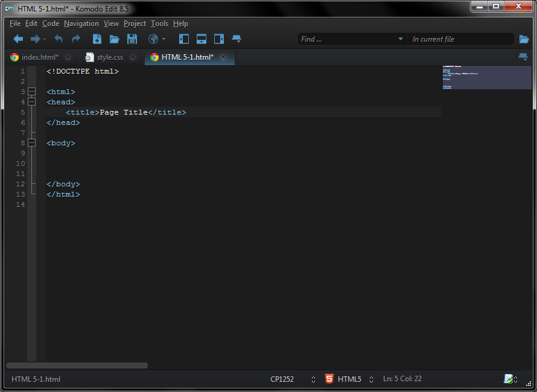

About
My name is Eric Ng in the graduating class of 2016. I am a 2nd year undergraduate student in the ITM major.
I am enjoying the class so far, but HTML really is quite an easy language to learn, and CSS rules are self explanatory as well. One of my classes in high school taught us about HTML and CSS, but we never really talked about javascript at all, and I know that it does add a lot of functionality to the page in terms of animations and page functionality. I expect to learn a lot about javascript and will probably enjoy it.
I expect to be changing the links out on the side navigation bar for when we actually start needing it, ex. assignments.html page with a list of all the assignments actually in it.
My text editor of choice for creating this stuff is Komodo Edit 8.5.
Normally it'd look like a plain text editor ith the white background, but with a skin change to the Abyss one, and a different text color scheme, you can get it to look like this. I opened up a default template for HTML5 in this and a few changes need to be made to get it to the "standard barebones HTML" like the meta tag with the charset and changing the language to en on the html tag. It also defaults to charset CP1252 (Western European) which is a little bit weird, but it's managable
While I would love to link my social media sites at the bottom links at the footer, I'd rather not share that information so they are staying with Google.
In the meantime, enjoy some music.